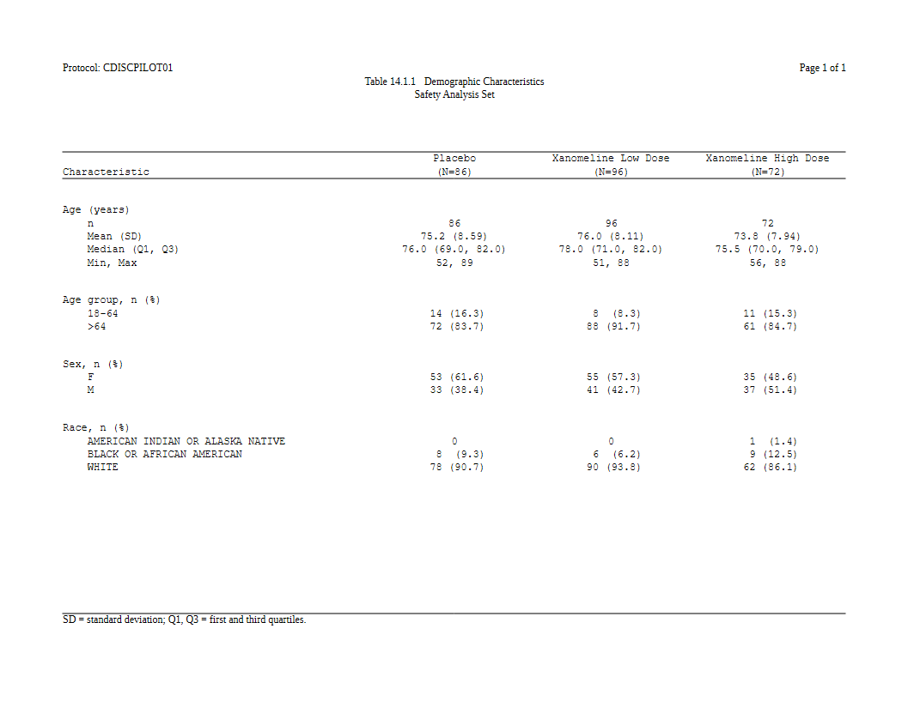
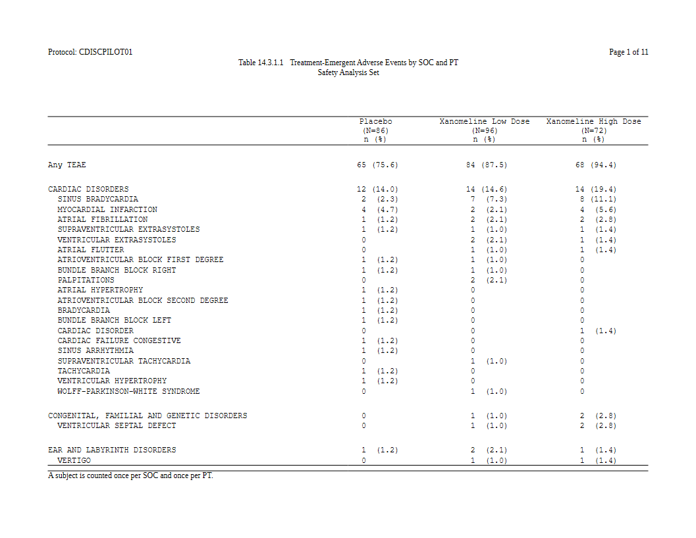

Most of rtfreporter starts from a table that already exists: a data
frame, a gt, an rtables object, and
as_rtftables() turns it into pages. This article starts one
step earlier, from an analysis results dataset (ARD):
the long frame of statistics that cards and cardx produce,
one number a row.
An ARD holds the numbers but not how the table shows them. Somebody still has to say which key goes across and which goes down, how a mean and an SD become one cell, what the rows are called and what the header says. In rtfreporter that is written as a plan:
ARD ──normalize_ard()──▶ flat frame ──table_plan()──▶ plan ──plan_*() verbs──▶ plan
│
rtf_tables(doc, plan) ◀───────────┘-
normalize_ard()flattens the ARD: groups and hierarchy become ordinary key columns. -
table_plan()names the roles: the column that goes across, the ones that go down. - each
plan_*()verb adds one declaration: the cell templates, the labels, the header, the widths. Nothing runs yet. -
rtf_tables(doc, plan)(orplan_apply(plan)) runs the plan and givesrtftablepages, the same objectsas_rtftables()makes.
The data and the ARD
The examples use the CDISC pilot study as the pharmaverseadam package ships it. The treatment is made a factor so the arms come out in study order.
arms <- c("Placebo", "Xanomeline Low Dose", "Xanomeline High Dose")
adsl <- pharmaverseadam::adsl
adsl <- adsl[adsl$SAFFL == "Y", ]
adsl$TRT01A <- factor(adsl$TRT01A, levels = arms)A demographics ARD: age summarised, three characteristics tabulated,
all by arm. continuous_summary_fns() adds the quartiles,
which cards leaves out by default.
ard_dm <- ard_stack(
adsl, .by = TRT01A,
ard_continuous(
variables = AGE,
statistic = ~ continuous_summary_fns(
c("N", "mean", "sd", "median", "p25", "p75", "min", "max"))),
ard_categorical(variables = c(AGEGR1, SEX, RACE)))ard_stack(.by = ) also counts the arms themselves. The
plan reads those counts for the (N=86) in the column
header, so nobody types them.
Step 1: flatten it
A cards ARD keeps its groups as pairs of columns
(group1, group1_level) whose values are lists.
normalize_ard() turns each group into a column of its own,
named after the variable, and adds the columns a table needs: the kind
of each row (.kind), its label and its depth in a
hierarchy.
nd <- normalize_ard(ard_dm)
nd[1:4, c("TRT01A", "variable", "variable_level", "context",
"stat_name", "stat", ".kind")]
#> TRT01A variable variable_level context stat_name stat .kind
#> 1 Placebo AGE <NA> continuous N 86.000000 continuous
#> 2 Placebo AGE <NA> continuous mean 75.209302 continuous
#> 3 Placebo AGE <NA> continuous sd 8.590167 continuous
#> 4 Placebo AGE <NA> continuous median 76.000000 continuousThis frame is what the plan works on. Its columns are the names you
will use in table_plan(): look at them first.
Step 2: the roles
table_plan() takes the roles and nothing else, like
ggplot(aes()):
-
cols: the key that goes across, one column per arm; -
rows: the keys that go down, here the analysis variable, calledgroupin the table.
p <- nd |>
table_plan(cols = "TRT01A", rows = c(group = "variable"))Step 3: the cells
plan_cells() says how the statistics become text. A cell
is a template: {mean:.1f} is the mean to one decimal,
{p:.1f%} a proportion shown as a percentage. Entries can be
keyed by the kind of variable:
-
continuous: a named vector, one printed row per name. The name is the row label. -
categorical: one template for every level,n (%). A formula entry comes first and wins where it applies:n == 0 ~ "0"prints a zero count without its(0.0).
p <- p |>
plan_cells(
continuous = c("n" = "{N:.0f}",
"Mean (SD)" = "{mean:.1f} ({sd:.2f})",
"Median (Q1, Q3)" = "{median:.1f} ({p25:.1f}, {p75:.1f})",
"Min, Max" = "{min:.0f}, {max:.0f}"),
categorical = c(n == 0 ~ "0", "{n:.0f} ({p:.1f%})"),
notes = FALSE)notes = FALSE turns off the message listing the
statistics no template used. Leave it on while you write a plan: it is
how you notice a statistic you forgot.
Step 4: how it looks
The rest is display. The variables get readable labels and their levels an order, then the stub, blank rows, widths and header are declared:
p <- p |>
plan_labels(c(AGE = "Age (years)",
AGEGR1 = "Age group, n (%)",
SEX = "Sex, n (%)",
RACE = "Race, n (%)")) |>
plan_levels(AGEGR1 = c("18-64", ">64"), SEX = c("F", "M")) |>
plan_stub(name = "row_label") |>
plan_blanks(where = "between_groups", first = TRUE, last = TRUE) |>
plan_columns(widths = c(4, 2, 2, 2)) |>
plan_style(border = "tfl", align_count_pct = TRUE) |>
plan_col_header(values = list(n = TRUE), rtf_col_header(
c("", "{col}"),
c("Characteristic", "(N={n})")))-
plan_stub()folds the variable and its rows into one indented column, the usual look of a demographics table. -
plan_col_header()writes the header with the samertf_col_header()as anywhere else. Its cells can use tokens:{col}is the column’s arm and{n}its population.values = list(n = TRUE)says to read that population from the ARD. -
align_count_pct = TRUElines up thenand the(%)of every count in a column.
The plan still has not run. Printing it lists what it declares, and the values the header tokens will take:
p
#> <table_plan> from a normalized frame, 9 layers -> RTF pages
#> cols "TRT01A"
#> rows group = "variable"
#> 1. cells continuous, categorical
#> 2. cell_options notes
#> 3. labels labels
#> 4. levels levels
#> 5. stub name, before
#> 6. blanks blank_rows, blank_row_first, blank_row_end
#> 7. columns widths
#> 8. style border, align_count_pct
#> 9. header header, values
#> in -- what cols / rows / label may name:
#> TRT01A, variable, variable_level, context, stat_name, stat_label,
#> stat, stat_fmt, .kind, .depth, .label, .label_order, group1,
#> group1_level, fmt_fun, warning, error
#> after widen -- not computed yet; run it once and this print fills in
#> header tokens -- what a plan_col_header() cell may carry:
#> {n} = c(Placebo = 86, Xanomeline Low Dose = 96, Xanomeline High Dose = 72)
#> {n:sum} = 254 over every column (less over a spanner: its own columns)
#> {n:Placebo} = 86
#> {n:Xanomeline Low Dose} = 96
#> {n:Xanomeline High Dose} = 72
#> rtf_tables(doc, x) renders it; plan_apply(x, "args") shows the callStep 5: run it
rtf_tables() takes the plan as it takes any table, and
runs it:
doc <- rtf_document() |>
rtf_section(secinfo = list(
header = rtf_header(list(
c(l = "Protocol: CDISCPILOT01", r = "Page {PAGE} of {TOTAL_PAGES}"),
c(c = "Table 14.1.1 Demographic Characteristics"),
c(c = "Safety Analysis Set"),
c(c = ""))),
footer = rtf_footer(list(
c(l = "SD = standard deviation; Q1, Q3 = first and third quartiles."))))) |>
rtf_tables(p)
generate_rtfreport(doc, "t_dm.rtf", overwrite = TRUE)
To see a stage without writing RTF, use plan_apply(). It
gives the pages by default. stage = "table" gives the table
data frame before it is split into pages, which is often the quickest
way to check a cell:
tb <- plan_apply(p, stage = "table")
tb[1:7, ]
#> group label Placebo Xanomeline Low Dose Xanomeline High Dose
#> 1 Age (years) n 86 96 72
#> 2 Age (years) Mean (SD) 75.2 (8.59) 76.0 (8.11) 73.8 (7.94)
#> 3 Age (years) Median (Q1, Q3) 76.0 (69.0, 82.0) 78.0 (71.0, 82.0) 75.5 (70.0, 79.0)
#> 4 Age (years) Min, Max 52, 89 51, 88 56, 88
#> 5 Age group, n (%) 18-64 14 (16.3) 8 (8.3) 11 (15.3)
#> 6 Age group, n (%) >64 72 (83.7) 88 (91.7) 61 (84.7)
#> 7 Sex, n (%) F 53 (61.6) 55 (57.3) 35 (48.6)A layer can be overridden
A plan is a list of layers, and a later layer wins over what an earlier one said about the same key. A house style can be written once and one table adjusted by adding a line, not by editing the original:
p2 <- p |>
plan_labels(AGE = "Age at baseline (years)") |>
plan_cells(AGE = c("n" = "{N:.0f}", "Mean (SD)" = "{mean:.1f} ({sd:.1f})"))
plan_apply(p2, stage = "table")[1:4, ]
#> group label Placebo Xanomeline Low Dose Xanomeline High Dose
#> 1 Age at baseline (years) n 86 96 72
#> 2 Age at baseline (years) Mean (SD) 75.2 (8.6) 76.0 (8.1) 73.8 (7.9)
#> 3 Age group, n (%) 18-64 14 (16.3) 8 (8.3) 11 (15.3)
#> 4 Age group, n (%) >64 72 (83.7) 88 (91.7) 61 (84.7)The AGE entry is narrower than continuous,
so it applies to AGE alone. The other variables keep the
kind-wide template.
Adverse events: a hierarchy, sorted by frequency
A table of adverse events by system organ class (SOC) and preferred
term (PT) starts from ard_stack_hierarchical().
over_variables = TRUE adds the “any event” row, and the
denominator is the safety population in ADSL, so the percentages are of
the arm.
adae <- pharmaverseadam::adae
adae <- adae[adae$TRTEMFL %in% "Y" & adae$SAFFL %in% "Y", ]
adae$TRT01A <- factor(adae$TRT01A, levels = arms)
ard_ae <- ard_stack_hierarchical(
adae, variables = c(AEBODSYS, AEDECOD), by = TRT01A,
denominator = adsl, id = USUBJID, over_variables = TRUE)normalize_ard() is told which variables are the
hierarchy, and what to call the overall row:
p_ae <- ard_ae |>
normalize_ard(hierarchy = c("AEBODSYS", "AEDECOD"),
overall = "Any TEAE") |>
table_plan(cols = "TRT01A", rows = c(SOC = "AEBODSYS", PT = "AEDECOD"),
label = NA) |>
plan_sort(".overall", "SOC", ".depth", "-n", "PT") |>
plan_cells("{n:.0f} ({p:.1f%})", notes = FALSE) |>
plan_stub(name = "System Organ Class\n Preferred Term", indent = 2) |>
plan_blanks(where = "between_groups", first = TRUE) |>
plan_paginate_rows(max_rows = 30, split = "group_safe") |>
plan_columns(widths = c(5, 2, 2, 2)) |>
plan_style(border = "tfl", align_count_pct = TRUE) |>
plan_col_header(values = list(n = TRUE), rtf_col_header(
c("", "{col}"),
c("", "(N={n})\nn (%)")))-
plan_sort(".overall", "SOC", ".depth", "-n", "PT")is the row order, key by key: the overall row first, then the SOCs (alphabetically). Within a SOC, its own row comes first (.depth), then its PTs by the number of subjects in all arms, most first (the minus sign means descending), with ties by name.-nalone would order every row by its count and take the PTs away from their SOC. The keys are what keeps the hierarchy together. -
plan_paginate_rows(split = "group_safe")breaks pages between SOCs, not inside one, when a SOC fits on a page. - The header’s
{n}here is the arm’s denominator. It comes from the hierarchical ARD, not from a count of the adverse events.
doc <- rtf_document() |>
rtf_section(secinfo = list(
header = rtf_header(list(
c(l = "Protocol: CDISCPILOT01", r = "Page {PAGE} of {TOTAL_PAGES}"),
c(c = "Table 14.3.1.1 Treatment-Emergent Adverse Events by SOC and PT"),
c(c = "Safety Analysis Set"),
c(c = ""))),
footer = rtf_footer(list(
c(l = "A subject is counted once per SOC and once per PT."))))) |>
rtf_tables(p_ae)
generate_rtfreport(doc, "t_ae.rtf", overwrite = TRUE)
length(plan_apply(p_ae)) # pages
#> [1] 11
Without a plan: widen_ard()
A plan defers everything until it runs, which is what lets a later
layer win and a plan be saved and reused. When you want the table data
frame now, widen_ard() does the ARD half in one call. It
takes the same templates, and gives you a frame to finish with
as_rtftables() as usual:
wide <- widen_ard(
nd, cols = "TRT01A", rows = c(group = "variable"),
cells = list(continuous = c("Mean (SD)" = "{mean:.1f} ({sd:.2f})",
"Median" = "{median:.1f}"),
categorical = "{n:.0f} ({p:.1f%})"),
notes = FALSE)
head(wide, 6)
#> group label Placebo Xanomeline Low Dose Xanomeline High Dose
#> 1 AGE Mean (SD) 75.2 (8.59) 76.0 (8.11) 73.8 (7.94)
#> 2 AGE Median 76.0 78.0 75.5
#> 3 AGEGR1 18-64 14 (16.3) 8 (8.3) 11 (15.3)
#> 4 AGEGR1 >64 72 (83.7) 88 (91.7) 61 (84.7)
#> 5 SEX F 53 (61.6) 55 (57.3) 35 (48.6)
#> 6 SEX M 33 (38.4) 41 (42.7) 37 (51.4)Use widen_ard() to get at the numbers quickly, or to
hand the frame to something else. Use a plan for a table that is part of
a report.
Where to start: plan_template()
plan_template() reads an ARD and writes a starting plan
for it, with the roles guessed, a template for every kind of variable it
finds, and the display verbs set to common values. It is meant to be
pasted into your program and edited:
plan_template(ard_dm, cols = "TRT01A", file = "t_dm_plan.R")Where next
- The plan verbs: what each verb declares, grouped by job.
- Listings with a plan: a plan with no ARD at all.
-
From as_rtftables() to a
plan: which verb takes over each
as_rtftables()argument.